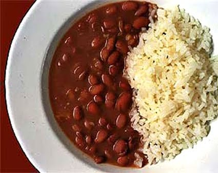

Home

Arroz com Feijão
Description
Perhaps the most staple dish found in Brazil, this classic has sustained generations and will continue to do so. It consists of white rice and red or black beans. The version I'm used to also has onions and tomato paste.
We begin by prepping the rice and beans with a thorough washing, and then we'll dice up the other ingredients and cook them all.
Ingredients
- 1-2 cups of White rice
- 1-2 cups of Pinto beans (or black, doesn't matter)
- 1/2 an onion
- 10-20 ml of Extra virgin olive oil (EVOO)
Steps
- Thoroughly wash the rice a few times. We personally put the rice in a bowl, fill it with hot water, mix the rice around, dump out the water, repeat a couple times, and on the last time use cold water and then dump that water. You should be left with wet rice.(supposedly the hot water leaches metals more easily, so it's just for our own peace of mind)
- Put enough EVOO in the bottom of a pot to be able to spread it so it coats the bottom.
- Dice the onion and throw it in the pot.
- Turn on the stove burner and put it on high.
- While the pot is heating up, put a cup of water in the microwave and heat it for 1-2 minutes.
- When the oil and onion mix starts to give off smoke, throw the rice into the pot and start mixing it around with a spatula until the rice starts to clump together and become somewhat harder to mix. This should be less than 3-5 minues.
- At this point the water should be microwaved and ready. Carefully take it from the microwave (watch out for bubbling caused by movement!) and dump it into the pot. If you need more water it's ok to just take it from the tap. You want the water to cover the rice by about half an inch to an inch (one knuckle as is commonly said).
- Salt the rice to taste. Put in the salt, mix it around, and then spoon out a little bit (careful! blow it til cool) and taste. Make it to your liking.
- It should be ready in 15 to 20 minutes. After it is done, mix it around again with a spatula to "fluff" the rice so it doesn't come out too wet and sticky.
- Step 1
- Step 2
- Step 3